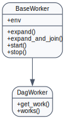
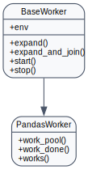
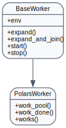

agi-node API
Path handling
Workers resolve any dataset or workspace URI through
BaseWorker.normalize_data_uri before touching the filesystem. The helper
accepts str or pathlib.Path inputs and normalises them as follows:
UNC-style shares on Windows (for example
\\server\share) are preserved by wrapping them inPureWindowsPathand returning theos.path.normpathrepresentation so network drives keep their double backslashes.Every other value is expanded relative to the current home directory. This lets configuration files ship entries such as
data/my-projectwhile still resolving to~/data/my-projecton the worker host.Path.resolve(strict=False)is applied to keep symlinks such as the~/datalink created by installers, while still accepting directories that are created later during the run.On non-managed Windows installs the helper also attempts to map the dataset under
\\127.0.0.1\…vianet useso local workers gain access to the same share paths used on Linux.The function emits POSIX-style strings on Unix-like systems and uses
os.path.normpathon Windows so downstream code can hand the value to shell commands orpathlibwithout further tweaks.
All built-in workers, including flight_worker and mycode_worker, call
this helper in start and work_pool to populate self.args.data_uri
and any per-file path passed to the pool. Extending these workers means you get
consistent path semantics across local and distributed executions without
copy-pasting platform-specific logic.
Argument helpers
Recent updates to BaseWorker standardise how workers load, merge, and persist
their argument models. Every subclass can opt into the following hooks:
default_settings_pathanddefault_settings_sectioncontrol the TOML source used byfrom_toml/to_toml.args_loaderandargs_mergerare callables that fetch and combine raw settings with user overrides before instantiating the worker.args_ensure_defaultslets workers patch derived values (for example, normalising paths) after the merge but before instantiation.args_dumperandargs_dump_modedefine howto_tomlemits the active configuration, enabling round-trips back intoapp_settings.toml.
If these helpers live in the worker module (for example load_args or
dump_args defined alongside the class) or inside a sibling *_args/app_args
module, BaseWorker auto-binds them during class creation. That lets most apps
drop the explicit args_loader = … boilerplate while still allowing manual
overrides for custom integrations.
Managed PC path remapping
managed_pc_path_fieldslists argument attributes that should be remapped to the managed-machine workspace (~/MyAppby default) whenAgiEnvreports a managed PC.managed_pc_home_suffixcustomises the managed workspace folder name if your deployment uses something other thanMyApp.BaseWorker.from_tomlapplies the remapping automatically; when instantiating a worker manually, usesetup_argsto apply defaults and remap paths in a single call.setup_argsoptionally acceptsoutput_field(e.g."data_uri") along withoutput_subdir,output_attr,output_cleanandoutput_parents_upso managers can prepare their output directories without repeating boilerplate.
Output directory helpers
prepare_output_dircentralises the setup of manager-side output folders (defaulting todataframe). Hand it the base path you want to target and it normalises the path, clears old contents whenauto_clean_data_outis enabled, creates the directory, and stores it onself.data_outunless you override the target attribute.
With these attributes in place, BaseWorker.from_toml produces a configured
instance and BaseWorker.to_toml writes the updated schema without each app
copying boilerplate. BaseWorker.as_dict exposes a serialisable payload for
Streamlit pages and API consumers, while _extend_payload stays available for
apps that need to enrich the exported structure.
Reference
dag_worker


{kind=link}
pandas_worker


{kind=link}
polars_worker


{kind=link}